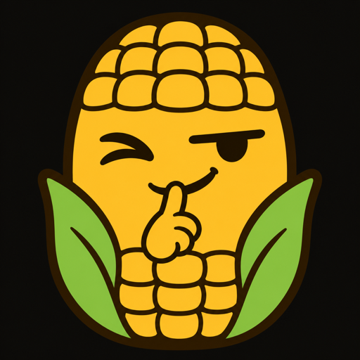
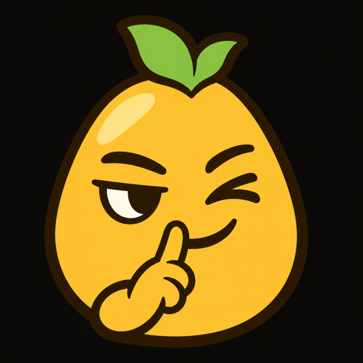
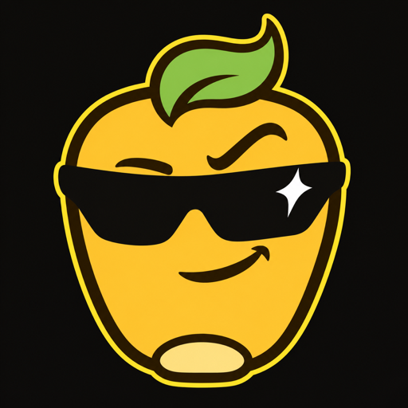
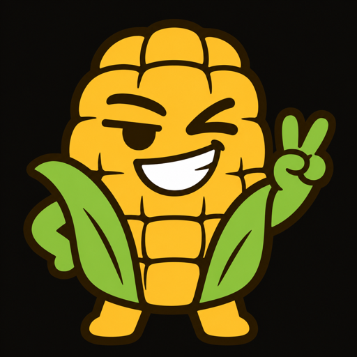

Corn logo concept
Corny
Corny is a stubby, sticker-style cob who winks with a finger to his lips. The "shh" says privacy without a padlock, and the wink says Corn doesn't take itself too seriously. The kernel rows and husk leaves keep it clearly corn, and with flat colours and thick ink outlines it reads as a character rather than produce.
1 · The mark

2 · Android app icon
On dark
On light
3 · On the home screen
9:41●●● ▮
9:41
Thursday, 5 November
Clock
Notes
Calendar
Camera
Messages
Corn
Photos
Settings
4 · Small sizes
The 192px tile is wider than a phone screen, so this row scrolls sideways. At 48px the wink, finger and green leaves still come through.
5 · Lockup
corn
corn
6 · Alternates


